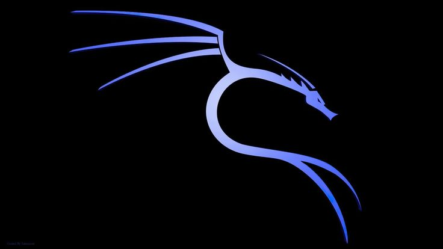

About Me
A passionate IT student driven by ethics, creativity, and continuous growth.

My Cybersecurity Journey
What initially drew me to cybersecurity is its extraordinary, almost superhuman technical nature. I realized that when harnessed with strong ethics, these skills can lead to remarkable goals and achievements you can truly be proud of. My long-term vision is to become a highly skilled and accomplished Ethical Hacker—an expert who genuinely loves what they do.
Design, Passion, and Balance
While cybersecurity focuses on logical defense, graphic design comes from a very different place: my genuine love for art, design, and creative intuition. Though the two fields may not seem directly connected on the surface, design started as a reliable income source and blossomed into a true creative outlet for me.
How I Manage My Time & Learn
I manage my time through structured and sustainable habits. I commit to spending 30 to 45 minutes a day taking a lesson, with a strong focus on hands-on practical application. Even when fueled by excitement, I make sure not to exceed that time limit—ensuring I return the next day just as hungry and eager to learn.
Beyond the Screen
Outside of my studies, technology, and design work, you will find me on the football pitch. Playing football helps me stay balanced, refreshed, and ready for the next challenge.